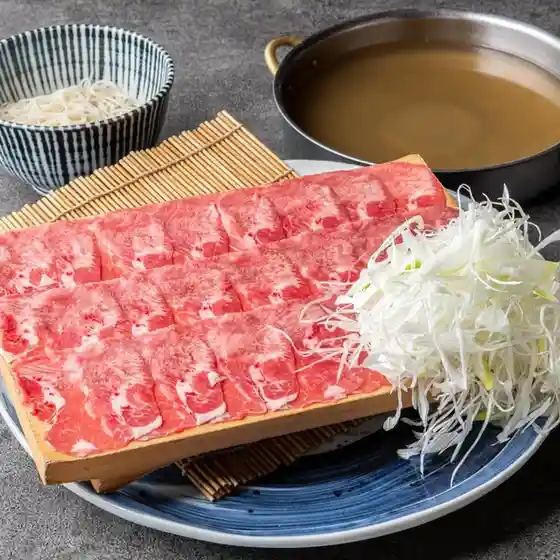
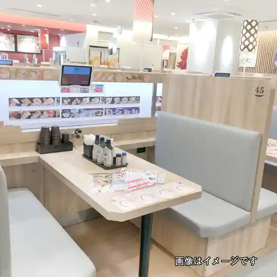
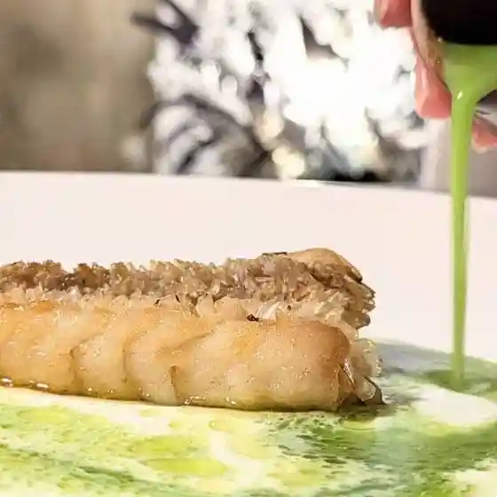
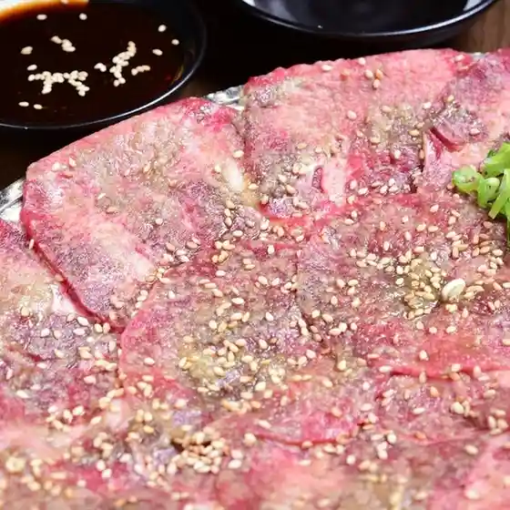
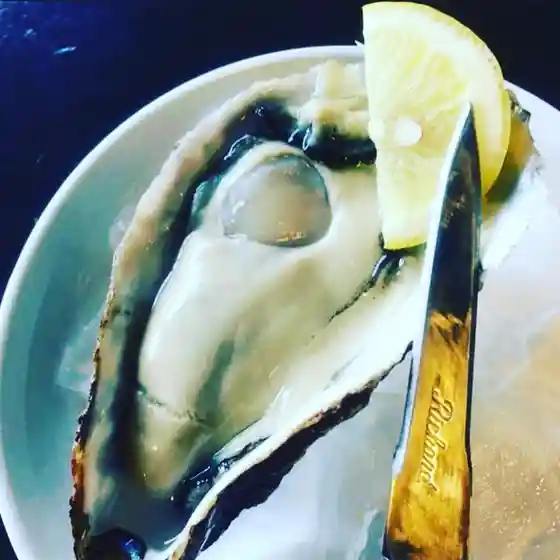
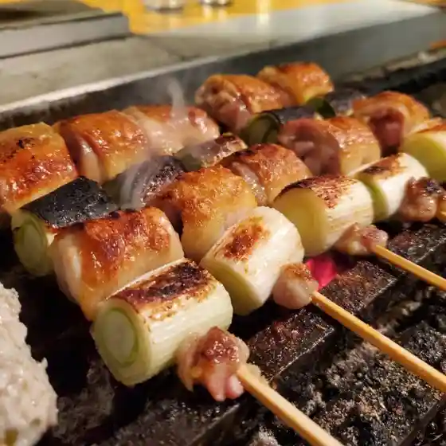
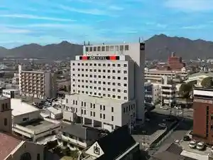
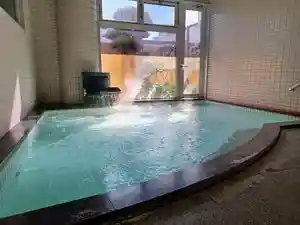
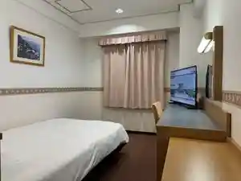
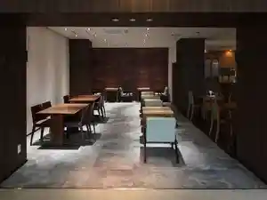

Hofu
Hofu · Yamaguchi
Hofu
Highlighted on the Yamaguchi map.

Sights
Hofu Tenmangu Shrine
Wayosetchu ! Kyu Mori Kahon Tei De Ajiwa U Afutanunteii

Mori Shi Garden Mori Museum

Ohira Yamayama Itadaki Park

Tamanoya Shrine

Udagagaku
Hofu Seishonen Science Museum Soraru
Hofu Tourist Information Machi no Eki Umeterasu / Rentasaikuru
Roadside Station Shio Sai Market Hofu
Todaiji Betsuin Amida Tera
Kochi Zu Wo Katate Nimachiwo Aruko U (Miya City Hen) Yasashii Kosu Ari
Kochi Zu Wo Katate Nimachiwo Aruko U (Tonomi Hen)
Suo Kokubunji
Tonomi Beach
Kochi Zu Wo Katate Nimachiwo Aruko U (Mitajiri Hen)
Amida Tera Ishiburo (Kodai Sauna) Experience Shinshin Toto no U 900 Nenmae no Nekki Yoku
Gyoten Ro 2 Kai (Tokubetsu Kokai) to Yoshimatsu Iori no Matcha Experience
Kochi Zu Wo Katate Ni, Machiwo Aruko U Kikangentei Kaido Uoku Kyu Sanyodo Hofu
Mitajiri Ocha Ya (Ei Kumo So)
Kochi Zu Wo Katate Nimachiwo Aruko U (Kuwayama Hen)
Hofu Machi no Eki
Suo Kokuga Ato
Suo Kokubunji De Nenju Zukuri Experience Juyo Bunkazai (Kondo) Haikan
Hofu Tenmangu Shrine Shinshoku Niyoru Keidai Tokubetsu Annai to Rekishikan De no Matsuzaki Tenjin Engi Emaki (Fukusei) Nifureru Experience
Yuyu Plaza (Sawa Kawa Migigishi Kasenjiki Tamokuteki Plaza)
Sawa Kawa
O Warai Ko Senshukentaikai (Mogi Experience) Hofu no Dento Shinji (Warai Ko) Ga Motsu (Warai) no Miryoku Wo Tsutae Masu
Kyu Mori Kahon Tei Hikokai Eria Tokubetsu Annai
Ei Kumo So De Hiwada Fuki Kosuta Tsukuri Experience Ei Kumo So Ya Yamaguchi City Ruri Mitsudera Goju to no Yane no Hiwada Fuki (Hiwadabuki) Dento Sozai Wo Katsuyo
(Tezu Kuri Imono Taiken) Hofu no Imono Chuzo no Rekishi Ni Fure Yo !
Rekishi Butai : Ei Kumo So De Wabun Katai Ken (Heian Shozoku Experience Wagashi Tsukuri Experience Purasu Matcha) Wa Wo Tanoshi Mu Taikan Suru
Hajimete no Joba Taiken ! 1 Nichi 1 Kumi Gentei ! Tokubetsu Puroguramu
Kanko Kashikiri Takushiipuran Hofu Hayama Wari Kosu (Hofu no Ninki Kanko Supotto Womeguru)
Ko Shima Sports Park
Kasuga Shrine
Rekishi to Zuan Cho Nifureru Kimono Ato Experience
Boseki Tetsudo Jokikikansha
Dairaku Tera
Nichijo no Utsuwa Wo Tsukuru ! Yaki Mono (Tamanoya Kama) Experience
Kuwayama Park
Mitajiri Shioda Kinen Sangyo Park
Shiawase Masu O Zen to Akari no Chiruautonaito
Dainichi Burial Mound
Kuni Historic Site (Ei Kumo So) no Yakan Tokubetsu Raitoappu & Sansaku Puran
Usa Hachiman Shrine
Te Burade OK! Furaipan De Tsukuru Tennen Shio Zukuri Experience
Mizu no Hofu Wo Kanji Ru Dentoteki Shuzo Ri Kengaku Hofu Tenmangu Shrine Omiki no Genten Wo Tazune Ru ★ O Miyage Tsuki ★
Tenjin Yama Park
Tokubetsu Annai De Meguru (Shio Zukuri Taiken to Shuzo Ko Tokubetsu Kokai)
Mitajiri Gyoshu Kura Ato
Mebaru Park (Shinchiku Chi Town Bosai Plaza)
Yamaguchi Imono Memorial Museum
Aizen Me Wakushoppu to Ranchi & Suiitsu
Mori Shi Teien De Yuga Na Teiitaimu ! Tokusei (Kamon Iri Makaron) to Kocha no Setto
Hofu Tenmangu Shrine Ken Shitei Shiseki (Dai Sen Bo) Kashikiri Experience to Goten De Seishiki Sanpai
Sogyo 120 Nen no Shuzo Detsukuru " Watashi Dake no Ippon " Experience
Hagi Hanshu Yukari no (Ei Kumo So) De Rekishi Ni Hitaru Tokubetsu Chushoku (O Tonosama O Himesama Ranchi) Puran
Kuni Historic Site (Ei Kumo So) no Yakan Tokubetsu Raitoappu & Sansaku Puran + Yushoku Tsuki
Tentoku Tera
Kajitori Moto Hiko Fusai no Haka
Suo Kokubunji Kondo
Hofu Kanko Boranteiagaido no Kai
Santoka Furusato Kan
Tokubetsu Kokai Shiroishi Ie House Kura Kengaku to, Wa no Dento “ Furoshiki Tsutsumi Experience ” ★ Furoshiki Tsuki ★
(Hofu Keirinjo) Fudan Miru Koto no Dekinai Basho Wogo Annai Suru Bakkuyado Tour
Hofu Kimono Taiken to Yoshimatsu Iori no Matcha Experience Kimono De Hofu Tenmangu Shrine Wo Sansaku ! Chashitsu De Matcha Taiken (Kinensatsuei Tsuki)
Suo Kokubunji Deo Mamori Zukuri Taiken (Kigan Tsuki) Juyo Bunkazai (Kondo) Haikan
Nojima
Shiki Yama Castle Ruins
Gokokuji
Miya City Honjin Ani Bu Ie
Ei Kumo So De (Miso Somurie) to “ Miso Zukuri Experience ” Nihondento Chomiryo no Honmo no Experience
Masu Chiku Rankan Hashi
Ko Shima Tanuki Seisokuchi
no Village Bo Higashi Ama Shuen no Taku Ato Oyobi Haka
Oimatsu Shrine
Tentoku Tera no Icho
Hofu Ko Shima no Kanzakura
Ashi Sho Tera
Taneta Santoka Seika Ato
Hofu Meisho Wo Meguru Potaringu no Mbirito Jitensha Sanpo (Pinpointo Kanko Gaido, Kyotsu Chowari Haikan Ken Tsuki)
Hofu Tourist Information
Kurumazuka Burial Mound
Ei Kumo So De Hiwada Fuki Kosuta Atofuremu Tsukuri Experience Ei Kumo So Ya Yamaguchi City Goju to no Yane no Hiwada Fuki (Hiwadabuki) Dento Sozai Wo Katsuyo
Umigamie Ru (Hana no Sono) (Shinchiku Chi Ryokuchi)
Dai Village no Sho no Heya (Asupirato)
Iwa Hatake Burial Mound
Ito Inoe Ryo Ko Joriku no Hi
Yamatoya Masasuke no Funagura
Minyo Hamako Uta
Mukaiyama Sango Burial Mound
Nishiura Ehimeayame Jisei Nangen Chitai
Hofu Bunkazai Local History Museum
Hagi Okan (Hofu)
Mitajiri Hama Taikai Tokoro Ato
Imono Shi Taishi Tsuka
Hofu Nakaura no Ryokushoku Hengan
Sumiyoshi Shrine no Sekizo Todai
Kajitori Moto Hikozo Tajiri Oka Village Hontei
Ko Haku Kawaragama Ato
Hofu Yakusho
Dining
旨唐揚げと居酒メシ ミライザカ ルルサス防府店
Mune Karaage To Kyo Sake Meshi Miraizaka Rurusasu Houfu Mise

武蔵 防府店
Musashi Houfu Mise

かっぱ寿司 防府店
Kappa Sushi Houfu Mise

や台ずし 防府駅前町
Ya Dai Zushi Houfu Ekimae Machi

SUNUKICHI
Sunukichi

ことぶき焼肉 本店
Kotobuki Yakiniku Honten

ウミコヤ38
Umikoya 38

串焼 火力
Kushiyaki Karyoku

鰻の成瀬 防府店
Unagi No Naruse Houfu Mise
千年の宴 防府駅前店
Sennen No Utage Houfu Ekimae Mise
かみふうせん 防府港口駅前店
Kamifuusen Houfu Koukou Ekimae Mise
イタリアン食堂 良’s
Itarian Shokudou Ryou ’ S
焼肉食べ放題 うし吟
Yakiniku Tabe Houdai Ushi Gin
蔵々
Kura (Kurikaesi)
ここ一軒で山口県 ほまれ座 防府店
Koko Ikken De Yamaguchiken Homare Za Houfu Mise
村さ来 防府店
Murasaki Houfu Mise
地鶏食堂 防府店
Jidori Shokudou Houfu Mise
来夜味
Rai Yoru Aji
牛角 防府店
Gyuukaku Houfu Mise
しゃぶしゃぶ温野菜 防府店
Shabushabu Onyasai Houfu Mise
じゅうじゅう亭
Juujuu Tei
さくら茶屋 鷸
Sakura Chaya Shigi
むっしゅ小五郎
Musshu Kogorou
tacos&steak house Mola
Tacos&Amp;Steak House Mola
吉野家 佐波川SA上り店
Yoshinoya Sawa Kawa Sa Nobori Mise
大島 防府店
Ooshima Houfu Mise
食堂 きいさんねー
Shokudou Kiisannee
花あそび 防府店
Hana Asobi Houfu Mise
竹本家
Takemoto Ie
FR1
Fr1
みやま
Miyama
マクドナルド イオンタウン防府店
Makudonarudo Iontaun Houfu Mise
路子食事処
Michiko Shokuji Tokoro
マクドナルド 防府店
Makudonarudo Houfu Mise
ふれあいステーション ダイドウ
Fureai Suteeshon Daidou
だるま
Daruma
来来亭 防府店
Rairai Tei Houfu Mise
CAFE HANALINO
Cafe Hanalino
スーパーセンタートライアル 防府店
Suupaasentaatoraiaru Houfu Mise
すき家 防府南松崎店
Suki Ie Houfu Nanshou Saki Mise
はあとおむすび
Haatoomusubi
間鍋竹士のうつわを愉しむカフェギャラリー
Manabe Takeshi Noutsuwawo Tanoshi Mu Kafegyararii
ほたみ珈琲
Hotami Koohii
創作料理 和
Sousaku Ryouri Wa
軽食 喫茶 リバー
Keishoku Kissa Ribaa
あけぼの
Akebono
やよい軒 防府店
Yayoi Ken Houfu Mise
リズム カフェアンドライフスタイル
Rizumu Kafeandoraifusutairu
居酒屋アマン
Izakaya Aman
アルク 防府店
Aruku Houfu Mise
メルシー
Merushii
ごはん屋 あんしゃんて
Gohan Ya Anshante
Shuklevain 防府店
Shuklevain Houfu Mise
ミリオーレコーヒーロースターズ ほうふけいりん店
Mirioorekoohiiroosutaazu Houfukeirin Mise
海匠 國近商店
Umi Takumi Kunichika Shouten
モスバーガー 防府コスパ店
Mosubaagaa Houfu Kosupa Mise
ベルクラシック 防府
Berukurashikku Houfu
江泊温泉 和の湯
Kou Haku Onsen Nagono Yu
清香園
Kiyoka Sono
毛利庭園ゴルフ倶楽部
Mouri Teien Gorufu Kurabu
Aji Noomotenashi Hama Hofu Yamaguchi Prefecture Chugoku
Aji Noomotenashi Hama Hofu Yamaguchi Prefecture Chugoku
Aji Noomotenashi Hama Hofu Yamaguchi Prefecture Chugoku
Aji Noomotenashi Hama Hofu Yamaguchi Prefecture Chugoku
Aji Noomotenashi Hama Hofu Yamaguchi Prefecture Chugoku
Aji Noomotenashi Hama Hofu Yamaguchi Prefecture Chugoku
Aji Noomotenashi Hama Hofu Yamaguchi Prefecture Chugoku
Aji Noomotenashi Hama Hofu Yamaguchi Prefecture Chugoku
Beniya Hofu Yamaguchi Prefecture Chugoku
Beniya Hofu Yamaguchi Prefecture Chugoku
Beniya Hofu Yamaguchi Prefecture Chugoku
Beniya Hofu Yamaguchi Prefecture Chugoku
Beniya Hofu Yamaguchi Prefecture Chugoku
Beniya Hofu Yamaguchi Prefecture Chugoku
Beniya Hofu Yamaguchi Prefecture Chugoku
Beniya Hofu Yamaguchi Prefecture Chugoku
Anshin Shokudou Shiosai Hofu Yamaguchi Prefecture Chugoku
Anshin Shokudou Shiosai Hofu Yamaguchi Prefecture Chugoku
Anshin Shokudou Shiosai Hofu Yamaguchi Prefecture Chugoku
Anshin Shokudou Shiosai Hofu Yamaguchi Prefecture Chugoku
Anshin Shokudou Shiosai Hofu Yamaguchi Prefecture Chugoku
Anshin Shokudou Shiosai Hofu Yamaguchi Prefecture Chugoku
Anshin Shokudou Shiosai Hofu Yamaguchi Prefecture Chugoku
Anshin Shokudou Shiosai Hofu Yamaguchi Prefecture Chugoku
Nontazushi Hofu Hofu Yamaguchi Prefecture Chugoku
Nontazushi Hofu Hofu Yamaguchi Prefecture Chugoku
Nontazushi Hofu Hofu Yamaguchi Prefecture Chugoku
Nontazushi Hofu Hofu Yamaguchi Prefecture Chugoku
Nontazushi Hofu Hofu Yamaguchi Prefecture Chugoku
Nontazushi Hofu Hofu Yamaguchi Prefecture Chugoku
Nontazushi Hofu Hofu Yamaguchi Prefecture Chugoku
Nontazushi Hofu Hofu Yamaguchi Prefecture Chugoku
Nagasawa Garden Restaurant Hofu Yamaguchi Prefecture Chugoku
Nagasawa Garden Restaurant Hofu Yamaguchi Prefecture Chugoku
Nagasawa Garden Restaurant Hofu Yamaguchi Prefecture Chugoku
Nagasawa Garden Restaurant Hofu Yamaguchi Prefecture Chugoku
Nagasawa Garden Restaurant Hofu Yamaguchi Prefecture Chugoku
Nagasawa Garden Restaurant Hofu Yamaguchi Prefecture Chugoku
Nagasawa Garden Restaurant Hofu Yamaguchi Prefecture Chugoku
Nagasawa Garden Restaurant Hofu Yamaguchi Prefecture Chugoku
Sokaen Hofu Yamaguchi Prefecture Chugoku
Sokaen Hofu Yamaguchi Prefecture Chugoku
Sokaen Hofu Yamaguchi Prefecture Chugoku
Sokaen Hofu Yamaguchi Prefecture Chugoku
Sokaen Hofu Yamaguchi Prefecture Chugoku
Sokaen Hofu Yamaguchi Prefecture Chugoku
Sokaen Hofu Yamaguchi Prefecture Chugoku
Sokaen Hofu Yamaguchi Prefecture Chugoku
Ika Senhonka Hofu Yamaguchi Prefecture Chugoku
Ika Senhonka Hofu Yamaguchi Prefecture Chugoku
Ika Senhonka Hofu Yamaguchi Prefecture Chugoku
Ika Senhonka Hofu Yamaguchi Prefecture Chugoku
Ika Senhonka Hofu Yamaguchi Prefecture Chugoku
Ika Senhonka Hofu Yamaguchi Prefecture Chugoku
Ika Senhonka Hofu Yamaguchi Prefecture Chugoku
Ika Senhonka Hofu Yamaguchi Prefecture Chugoku
Sokaen Hofu Yamaguchi Prefecture Chugoku
Sokaen Hofu Yamaguchi Prefecture Chugoku
Sokaen Hofu Yamaguchi Prefecture Chugoku
Sokaen Hofu Yamaguchi Prefecture Chugoku
Aji Noomotenashi Hama Hofu Yamaguchi Prefecture Chugoku
Aji Noomotenashi Hama Hofu Yamaguchi Prefecture Chugoku
Aji Noomotenashi Hama Hofu Yamaguchi Prefecture Chugoku
Aji Noomotenashi Hama Hofu Yamaguchi Prefecture Chugoku
Indoryoriparata Hofu Yamaguchi Prefecture Chugoku
Indoryoriparata Hofu Yamaguchi Prefecture Chugoku
Indoryoriparata Hofu Yamaguchi Prefecture Chugoku
Indoryoriparata Hofu Yamaguchi Prefecture Chugoku
Miraizaka Rurusasu Hofu Hofu Yamaguchi Prefecture Chugoku
Miraizaka Rurusasu Hofu Hofu Yamaguchi Prefecture Chugoku
Miraizaka Rurusasu Hofu Hofu Yamaguchi Prefecture Chugoku
Miraizaka Rurusasu Hofu Hofu Yamaguchi Prefecture Chugoku
Umi no Sachi Hofu Yamaguchi Prefecture Chugoku
Umi no Sachi Hofu Yamaguchi Prefecture Chugoku
Umi no Sachi Hofu Yamaguchi Prefecture Chugoku
Umi no Sachi Hofu Yamaguchi Prefecture Chugoku
Umi no Sachi Hofu Yamaguchi Prefecture Chugoku
Umi no Sachi Hofu Yamaguchi Prefecture Chugoku
Umi no Sachi Hofu Yamaguchi Prefecture Chugoku
Umi no Sachi Hofu Yamaguchi Prefecture Chugoku
Dining Cafe Eight Hofu Yamaguchi Prefecture Chugoku
Dining Cafe Eight Hofu Yamaguchi Prefecture Chugoku
Dining Cafe Eight Hofu Yamaguchi Prefecture Chugoku
Dining Cafe Eight Hofu Yamaguchi Prefecture Chugoku
Dining Cafe Eight Hofu Yamaguchi Prefecture Chugoku
Dining Cafe Eight Hofu Yamaguchi Prefecture Chugoku
Dining Cafe Eight Hofu Yamaguchi Prefecture Chugoku
Dining Cafe Eight Hofu Yamaguchi Prefecture Chugoku
Bombers Eki Minami Hofu Yamaguchi Prefecture Chugoku
Bombers Eki Minami Hofu Yamaguchi Prefecture Chugoku
Bombers Eki Minami Hofu Yamaguchi Prefecture Chugoku
Bombers Eki Minami Hofu Yamaguchi Prefecture Chugoku
Bombers Eki Minami Hofu Yamaguchi Prefecture Chugoku
Bombers Eki Minami Hofu Yamaguchi Prefecture Chugoku
Bombers Eki Minami Hofu Yamaguchi Prefecture Chugoku
Bombers Eki Minami Hofu Yamaguchi Prefecture Chugoku
Nagasaki Chanmen Yamaguchi Bofu Ebisu Hofu Yamaguchi Prefecture Chugoku
Nagasaki Chanmen Yamaguchi Bofu Ebisu Hofu Yamaguchi Prefecture Chugoku
Nagasaki Chanmen Yamaguchi Bofu Ebisu Hofu Yamaguchi Prefecture Chugoku
Nagasaki Chanmen Yamaguchi Bofu Ebisu Hofu Yamaguchi Prefecture Chugoku
Nagasaki Chanmen Yamaguchi Bofu Ebisu Hofu Yamaguchi Prefecture Chugoku
Nagasaki Chanmen Yamaguchi Bofu Ebisu Hofu Yamaguchi Prefecture Chugoku
Nagasaki Chanmen Yamaguchi Bofu Ebisu Hofu Yamaguchi Prefecture Chugoku
Nagasaki Chanmen Yamaguchi Bofu Ebisu Hofu Yamaguchi Prefecture Chugoku
Etoile Hofu Yamaguchi Prefecture Chugoku
Etoile Hofu Yamaguchi Prefecture Chugoku
Etoile Hofu Yamaguchi Prefecture Chugoku
Etoile Hofu Yamaguchi Prefecture Chugoku
Etoile Hofu Yamaguchi Prefecture Chugoku
Etoile Hofu Yamaguchi Prefecture Chugoku
Etoile Hofu Yamaguchi Prefecture Chugoku
Etoile Hofu Yamaguchi Prefecture Chugoku
Fugudokoro Sajika Hofu Yamaguchi Prefecture Chugoku
Fugudokoro Sajika Hofu Yamaguchi Prefecture Chugoku
Fugudokoro Sajika Hofu Yamaguchi Prefecture Chugoku
Fugudokoro Sajika Hofu Yamaguchi Prefecture Chugoku
Fugudokoro Sajika Hofu Yamaguchi Prefecture Chugoku
Fugudokoro Sajika Hofu Yamaguchi Prefecture Chugoku
Fugudokoro Sajika Hofu Yamaguchi Prefecture Chugoku
Fugudokoro Sajika Hofu Yamaguchi Prefecture Chugoku
Getsumeiteitakahashi Hofu Yamaguchi Prefecture Chugoku
Getsumeiteitakahashi Hofu Yamaguchi Prefecture Chugoku
Getsumeiteitakahashi Hofu Yamaguchi Prefecture Chugoku
Getsumeiteitakahashi Hofu Yamaguchi Prefecture Chugoku
Getsumeiteitakahashi Hofu Yamaguchi Prefecture Chugoku
Getsumeiteitakahashi Hofu Yamaguchi Prefecture Chugoku
Getsumeiteitakahashi Hofu Yamaguchi Prefecture Chugoku
Getsumeiteitakahashi Hofu Yamaguchi Prefecture Chugoku
Umikoya38 Hofu Yamaguchi Prefecture Chugoku
Umikoya38 Hofu Yamaguchi Prefecture Chugoku
Umikoya38 Hofu Yamaguchi Prefecture Chugoku
Umikoya38 Hofu Yamaguchi Prefecture Chugoku
Umikoya38 Hofu Yamaguchi Prefecture Chugoku
Umikoya38 Hofu Yamaguchi Prefecture Chugoku
Umikoya38 Hofu Yamaguchi Prefecture Chugoku
Umikoya38 Hofu Yamaguchi Prefecture Chugoku
Italian Restaurant Rome Hofu Yamaguchi Prefecture Chugoku
Italian Restaurant Rome Hofu Yamaguchi Prefecture Chugoku
Italian Restaurant Rome Hofu Yamaguchi Prefecture Chugoku
Italian Restaurant Rome Hofu Yamaguchi Prefecture Chugoku
Italian Restaurant Rome Hofu Yamaguchi Prefecture Chugoku
Italian Restaurant Rome Hofu Yamaguchi Prefecture Chugoku
Italian Restaurant Rome Hofu Yamaguchi Prefecture Chugoku
Italian Restaurant Rome Hofu Yamaguchi Prefecture Chugoku
Dorufin Hofu Yamaguchi Prefecture Chugoku
Dorufin Hofu Yamaguchi Prefecture Chugoku
Dorufin Hofu Yamaguchi Prefecture Chugoku
Dorufin Hofu Yamaguchi Prefecture Chugoku
Dorufin Hofu Yamaguchi Prefecture Chugoku
Dorufin Hofu Yamaguchi Prefecture Chugoku
Dorufin Hofu Yamaguchi Prefecture Chugoku
Dorufin Hofu Yamaguchi Prefecture Chugoku
Miya no Soba Usagiya Hofu Yamaguchi Prefecture Chugoku
Miya no Soba Usagiya Hofu Yamaguchi Prefecture Chugoku
Miya no Soba Usagiya Hofu Yamaguchi Prefecture Chugoku
Miya no Soba Usagiya Hofu Yamaguchi Prefecture Chugoku
Miya no Soba Usagiya Hofu Yamaguchi Prefecture Chugoku
Miya no Soba Usagiya Hofu Yamaguchi Prefecture Chugoku
Miya no Soba Usagiya Hofu Yamaguchi Prefecture Chugoku
Miya no Soba Usagiya Hofu Yamaguchi Prefecture Chugoku
Italian Shokudo Ryo s Hofu Yamaguchi Prefecture Chugoku
Italian Shokudo Ryo s Hofu Yamaguchi Prefecture Chugoku
Italian Shokudo Ryo s Hofu Yamaguchi Prefecture Chugoku
Italian Shokudo Ryo s Hofu Yamaguchi Prefecture Chugoku
Italian Shokudo Ryo s Hofu Yamaguchi Prefecture Chugoku
Italian Shokudo Ryo s Hofu Yamaguchi Prefecture Chugoku
Italian Shokudo Ryo s Hofu Yamaguchi Prefecture Chugoku
Italian Shokudo Ryo s Hofu Yamaguchi Prefecture Chugoku
Tenjin nakatani Hofu Yamaguchi Prefecture Chugoku
Tenjin nakatani Hofu Yamaguchi Prefecture Chugoku
Tenjin nakatani Hofu Yamaguchi Prefecture Chugoku
Tenjin nakatani Hofu Yamaguchi Prefecture Chugoku
Tenjin nakatani Hofu Yamaguchi Prefecture Chugoku
Tenjin nakatani Hofu Yamaguchi Prefecture Chugoku
Tenjin nakatani Hofu Yamaguchi Prefecture Chugoku
Tenjin nakatani Hofu Yamaguchi Prefecture Chugoku
Shabu Shabu Onyasai Hofu Hofu Yamaguchi Prefecture Chugoku
Shabu Shabu Onyasai Hofu Hofu Yamaguchi Prefecture Chugoku
Shabu Shabu Onyasai Hofu Hofu Yamaguchi Prefecture Chugoku
Shabu Shabu Onyasai Hofu Hofu Yamaguchi Prefecture Chugoku
Shabu Shabu Onyasai Hofu Hofu Yamaguchi Prefecture Chugoku
Shabu Shabu Onyasai Hofu Hofu Yamaguchi Prefecture Chugoku
Shabu Shabu Onyasai Hofu Hofu Yamaguchi Prefecture Chugoku
Shabu Shabu Onyasai Hofu Hofu Yamaguchi Prefecture Chugoku
Pan Shokunin Hutabaya Hofu Yamaguchi Prefecture Chugoku
Pan Shokunin Hutabaya Hofu Yamaguchi Prefecture Chugoku
Pan Shokunin Hutabaya Hofu Yamaguchi Prefecture Chugoku
Pan Shokunin Hutabaya Hofu Yamaguchi Prefecture Chugoku
Pan Shokunin Hutabaya Hofu Yamaguchi Prefecture Chugoku
Pan Shokunin Hutabaya Hofu Yamaguchi Prefecture Chugoku
Pan Shokunin Hutabaya Hofu Yamaguchi Prefecture Chugoku
Pan Shokunin Hutabaya Hofu Yamaguchi Prefecture Chugoku
Kodawaritonkatsu Icho Hofu Hofu Yamaguchi Prefecture Chugoku
Kodawaritonkatsu Icho Hofu Hofu Yamaguchi Prefecture Chugoku
Kodawaritonkatsu Icho Hofu Hofu Yamaguchi Prefecture Chugoku
Kodawaritonkatsu Icho Hofu Hofu Yamaguchi Prefecture Chugoku
Kodawaritonkatsu Icho Hofu Hofu Yamaguchi Prefecture Chugoku
Kodawaritonkatsu Icho Hofu Hofu Yamaguchi Prefecture Chugoku
Kodawaritonkatsu Icho Hofu Hofu Yamaguchi Prefecture Chugoku
Kodawaritonkatsu Icho Hofu Hofu Yamaguchi Prefecture Chugoku
Yakiniku Juju tei Hofu Yamaguchi Prefecture Chugoku
Yakiniku Juju tei Hofu Yamaguchi Prefecture Chugoku
Yakiniku Juju tei Hofu Yamaguchi Prefecture Chugoku
Yakiniku Juju tei Hofu Yamaguchi Prefecture Chugoku
Yakiniku Juju tei Hofu Yamaguchi Prefecture Chugoku
Yakiniku Juju tei Hofu Yamaguchi Prefecture Chugoku
Curry Shop Jipang Hofu Yamaguchi Prefecture Chugoku
Curry Shop Jipang Hofu Yamaguchi Prefecture Chugoku
Curry Shop Jipang Hofu Yamaguchi Prefecture Chugoku
Curry Shop Jipang Hofu Yamaguchi Prefecture Chugoku
Curry Shop Jipang Hofu Yamaguchi Prefecture Chugoku
Curry Shop Jipang Hofu Yamaguchi Prefecture Chugoku
Curry Shop Jipang Hofu Yamaguchi Prefecture Chugoku
Curry Shop Jipang Hofu Yamaguchi Prefecture Chugoku
Kura Zushi Hohu Hofu Yamaguchi Prefecture Chugoku
Kura Zushi Hohu Hofu Yamaguchi Prefecture Chugoku
Kura Zushi Hohu Hofu Yamaguchi Prefecture Chugoku
Kura Zushi Hohu Hofu Yamaguchi Prefecture Chugoku
Kura Zushi Hohu Hofu Yamaguchi Prefecture Chugoku
Kura Zushi Hohu Hofu Yamaguchi Prefecture Chugoku
Kura Zushi Hohu Hofu Yamaguchi Prefecture Chugoku
Kura Zushi Hohu Hofu Yamaguchi Prefecture Chugoku
Komoyan Hofu Yamaguchi Prefecture Chugoku
Komoyan Hofu Yamaguchi Prefecture Chugoku
Komoyan Hofu Yamaguchi Prefecture Chugoku
Komoyan Hofu Yamaguchi Prefecture Chugoku
Komoyan Hofu Yamaguchi Prefecture Chugoku
Komoyan Hofu Yamaguchi Prefecture Chugoku
Zen Bohu Branch Hofu Yamaguchi Prefecture Chugoku
Zen Bohu Branch Hofu Yamaguchi Prefecture Chugoku
Zen Bohu Branch Hofu Yamaguchi Prefecture Chugoku
Zen Bohu Branch Hofu Yamaguchi Prefecture Chugoku
Zen Bohu Branch Hofu Yamaguchi Prefecture Chugoku
Zen Bohu Branch Hofu Yamaguchi Prefecture Chugoku
Zen Bohu Branch Hofu Yamaguchi Prefecture Chugoku
Zen Bohu Branch Hofu Yamaguchi Prefecture Chugoku
Oshima Hofu Hofu Yamaguchi Prefecture Chugoku
Oshima Hofu Hofu Yamaguchi Prefecture Chugoku
Oshima Hofu Hofu Yamaguchi Prefecture Chugoku
Oshima Hofu Hofu Yamaguchi Prefecture Chugoku
Stay
防府グランドホテル
Houfu Gurandohoteru
ホテルルートイン防府駅前
Hoteruruutoin Houfu Ekimae
アパホテル〈山口防府〉
Apahoteru < Yamaguchi Houfu >

天然温泉 天神の湯 スーパーホテル防府駅前
Tennen Onsen Tenjin No Yu Suupaahoteru Houfu Ekimae
ホテルサン防府
Hoterusan Houfu

ホテル・アルファ－ワン防府
Hoteru・Arufa - Wan Houfu

ビジネスホテルみやま
Bijinesuhoteru Miyama

HOTEL AZ 山口防府店
Hotel Az Yamaguchi Houfu Mise

野田西村（ＡＩＭＡ）
Noda Nishimura ( A I M A )